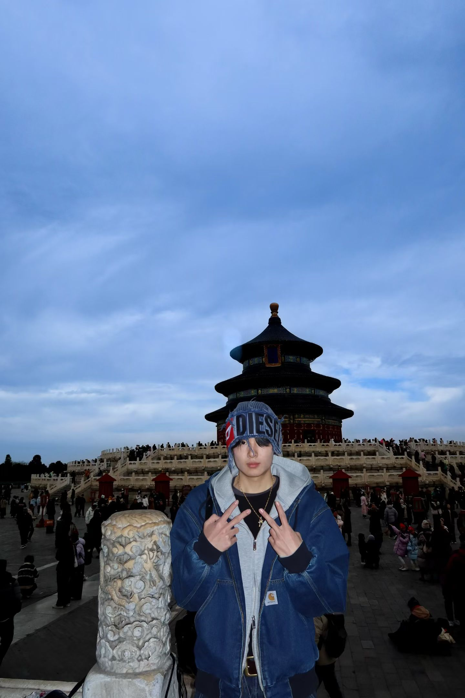

Welcome to My World
Hey there! I'm Yu Chen. I'm a student with a passion for learning, creating, and sharing. I love Electrical Engineering. Join me as I navigate my life and ideas.
Learn More About MeVisit My Professional Page
Featured Posts
View All →
Lighting up Futures: My Volunteering Journey in Shandong
Reflecting on four years of community impact work — coordinating donations and supporting underprivileged children across rural Shandong.
Small Hands, Big Impact: The Power of Youth Philanthropy
From a middle-school fundraiser for a leukemia patient to years of youth-led charitable work — how empathy shaped my leadership.
Beyond the Circuit: My Path in Electrical Engineering
Why I chose Electrical Engineering, what excites me about circuit design, and what it's like tutoring the next generation at UNSW.
Why I Made This Website
As an Electrical Engineering student, I wanted a place to centralize my academic achievements, CS projects, and daily life experiences.
Here you'll find my thoughts on engineering, my extracurricular adventures, and my reflections on volunteering and community service.